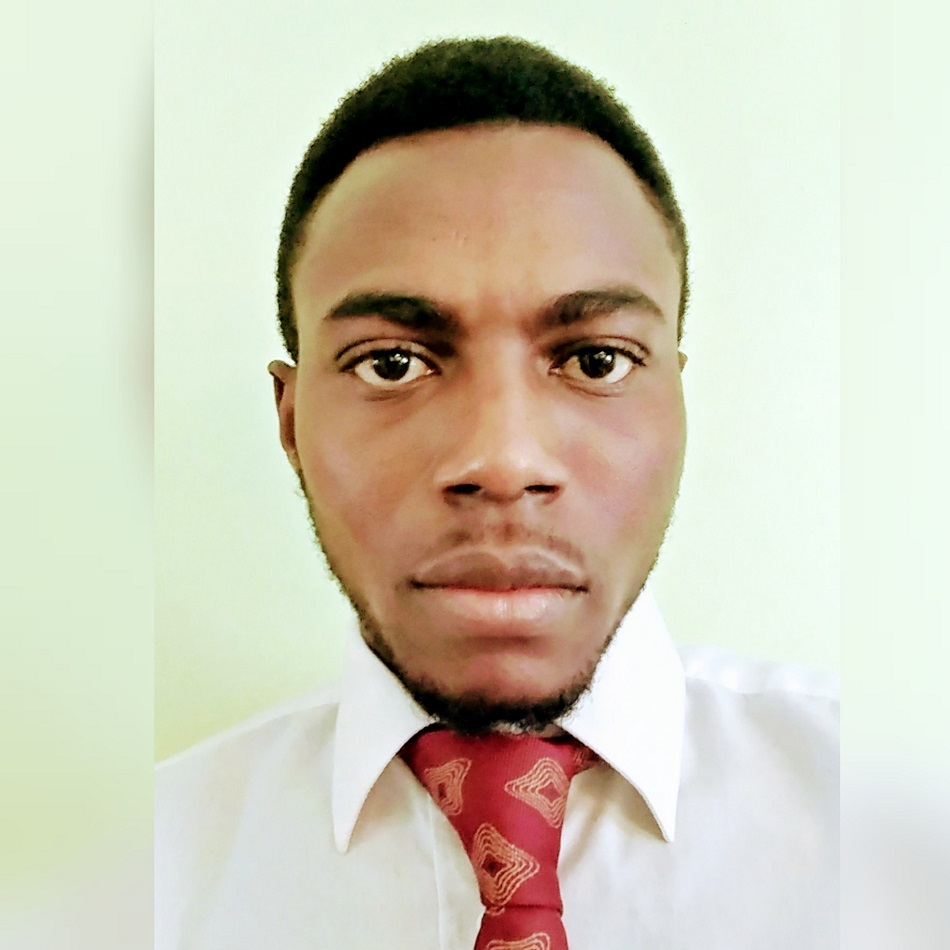

About Me

We were Christian family of 15 people in the village of Pagala-gare in the West African country of Togo. My father was a teacher and my mother runs a little restaurant. Pagala-gare was made up with several tribes so my education includes 5 native languages (Akposso, Ewe, Mina, Kotokoli, Kabye) beside our official language which is French. I spend a lot of time translating and solving problems in between those fellow villagers who found it difficult to communicate with each other. I also worked for an NGO (ONG Future Foundation Togo) putting on social and educational programs for children that did not have the advantage of a stable family grouping.
In 2013 I was stile I moved to Guinea to become a semi-professional soccer player, unfortunately I was injured in a game which cut my dream of soccer stardom, so I decided to enroll in the University to study sociology in 2014. After a year my name was selected by the US Diversity Visa program to move to the US and I spend the next several months being investigated by the US state department and homeland security before getting my Visa to move to the US. Then I reconnected to my US sponsor who had assisted me in my education since I was 9 years old. I took my first flight and arrived at Atlanta, GA on July 10th, 2016, and I’ve luckily gotten a full-time job at Kroger, and a year later, while looking for an option to reorient myself professionally, I apply and got accepted at Georgia Institute of Technology in Coding Boot-Camp. What a journey, and it just started!